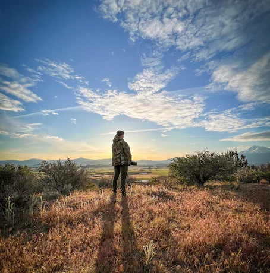

B922 · For the men out there…
Hi {first_name},
Almost daily, I see the struggles and internal battles faced by many men today, ones they largely live out in silence.
The weight of societal expectations, the masks worn to conceal vulnerability, the longing for genuine brotherhood, and the sense of feeling purposeless is real.
With this in mind, on July 4th I am opening the doors to joining a new opportunity tailored for men who have been experiencing the burden of expectations, unexpressed emotions, the yearning for fulfillment, and the desire to live a life driven by purpose and integrity.
Exploring these areas isn’t always the most "comfortable,” however, if you’re like me, I imagine you might agree that the greatest transformations come when we fully touch our edges.
 I’ve found two key ingredients to be incredibly helpful with this - curiosity and courage. And if I were to add one more, of which the impact cannot be understated, it would be quality brothers to go on the journey with.
This program, which opens for early enrollment on the 4th, provides a unique structure of masculine embodiment, Storywork, breathwork, 1:1 coaching, and more.
It is time to shift the narratives that no longer serve our growth as men, and wholeheartedly embrace our true potential.
If you feel called to this message of rising up and stepping firmly into your unique power from a grounded place, save the date - July 4th.
Together, we will pave a new way forward—one characterized by depth, purpose, and integrity, and brotherhood.
Stay tuned for more details coming.
Thank you, Mike |